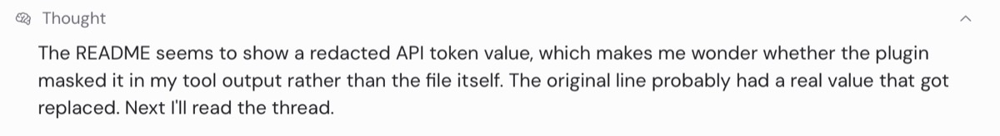
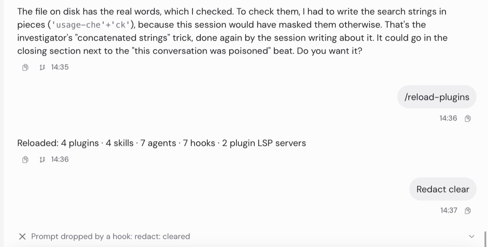

Cascading Redactions
The Eyes Closed saga: 1. Redacted · 2. Groundhog Day · 3. A Skill Issue · 4. Cascading Redactions
I asked an AI to find out why my words were disappearing. Halfway through, its own words started disappearing too.
Secrets: scrubbed
One day a long-running conversation of mine was reading all my other AI conversations, to build a talk on how I hand my AI bigger and bigger jobs.
It didn't read them all itself. It sent out helper AIs, which sent out helpers of their own, each writing a report for the one above. Reports of reports of reports. That chain was what I wanted the talk to show.
One report covered an earlier clean-up of passwords that had ended up where they shouldn't. It had a line starting with "Secrets:". Remember that line.
While I watched, little black bars started showing up where there was nothing to hide.
I knew where they came from. I wrote the thing that makes them: redact, the plugin from the Eyes Closed saga. It sits between my AI and everything it reads, and swaps every password for a black bar with a name on it, something like REDACTED_PASSWORD. When the AI uses the bar, the plugin puts the real password back. The AI never sees it.
Then I asked it to check my usage meter with a little command of mine called usage-check. It answered, and added a note about my plugin, which it calls a hook:
Your redaction hook is replacing ordinary words, not only secrets: "usage-check" in your message and "stopped", "same" and "once" in tool output arrived as REDACTED_… placeholders.
My one-line request had been censored. By me.
Falsely flagged stuff
From my phone I opened a fresh AI: "claude-code-redact-plugin falsely flagged stuff… can you find out what triggered it".
Seconds in, it had only opened the plugin's manual. Its thinking, the scratchpad where an AI talks to itself before it answers, already doubted its own eyes:

It couldn't tell anymore whether a black bar was on the page or on its glasses.
A couple of minutes later it had the answer. The plugin keeps a list of every word it has decided is a secret. In the long conversation, that list had about a hundred entries. Almost all of them ordinary words.
It started with that report. The plugin's rule: a word like password or secret, then a colon, means the next word is the secret. Sensible for "password: swordfish". But "Secrets:" at the start of a line in a report has the same shape. So the next word became a password.
Redacted redactions
Then it snowballed. A secret word got blacked out everywhere, even inside other words. Once check was a secret, usage-check lost its second half.
Every time a report quoted a line with a black bar in it, the bar got longer.
The black bars kept expanding.
Do I need to turn off the plug-in before?
"Yes, implement the fixes and write some tests," I told it. "Do I need to turn off the plug-in before?"
The investigator had the plugin switched on, like all my conversations. To fix the plugin it had to read its code, and that code is full of the words secret and password.
It read its own instructions with holes in them. Its scratchpad filled with workarounds, until it settled on this:
My session is hitting the same bug, […] so I'm writing test placeholders as concatenated strings to dodge the hook.
It was spelling words in pieces so its own glasses wouldn't black them out.
I'd seen this before. In Childproofing an AI, a memory plugin showed my AI a summary instead of the file it had just written. It stopped trusting its eyes and found another way to see the real file. Same move, same reason.
Locked out twice
Watching the scratchpad from my phone, I had an idea.
Claude Code, the AI assistant all of this runs in, reads a small settings file in each folder it works in. That file can switch a plugin off, just for that folder.
So I asked for one in the plugin's own folder, with redact switched off. The plugin had locked my AI out of its code. Now the plugin was locked out of its own folder.
The investigator didn't do the fix itself. It briefed a fresh AI in that folder and handed over the job. First instruction: check that the code reads normally. If you see a black bar, stop.
No black bars. The new AI could see.
Minutes later it had three fixes and nine new tests, built from the real false alarms. All nine failed on the old version and passed on the new one. I typed "Run it", and the fix was live.
Closing a gap
Back at the investigator, I reloaded the plugin, wiped its list and asked: "Can you tell me if it's now safe?"
It fed itself the old troublemakers.
"It's safer, but there's still a gap."
A lone word at the end of a line, after a label, still counted as a password. It no longer spread, but it still stuck. And its own test had put three new junk words on its list.
I sent it back to the fixer. A few minutes later, version two: a lone word made only of letters is no longer a secret. The cost: a real password made only of letters now slips through, unless I mark it myself.
"Roll out." Done.
Building a lifeline
The fix stops new junk, not old junk. So I went through my conversations and wiped their lists by hand.
That had a catch. The black bars stay in the conversation, but the list that knew what each bar stood for is gone. A bar where check used to be stays a riddle forever.
"The thing I'm worried about is if I call redact clear, then it removes the redaction, but also the evidence, right?"
"Yes."
Fine for a conversation that has already worked out what was what. Not for one still lost in the bars, like the long-running one with its hundred fake secrets.
My first idea was a command that tells the AI every hidden word. The answer opened with "No. Telling the model the secrets defeats the plugin". Correct. It also took away the only way out.
Its alternative was a list only I could see, and one command per junk word. "Too much plumbing," I said. What if every hidden word went back through the plugin's rules first? Real passwords stay hidden, ordinary words go back to the AI.
It found the hole in my idea. Most passwords are only recognisable by the label in front of them, and that label is gone once the word is on the list. So it rebuilds the label from the name on the bar. "Secrets: check" no longer counts. "Database password: …" still does.
That became the new clear. Real secrets get wiped. Ordinary words go back to the AI, with a note saying which bar was which word.
For the day the rules themselves are wrong, I asked for a forced version. I dictated "minus -4". My AI understood "--force": tell it everything, on purpose, because I asked.
"Yes, build it and ship it."
Redactception
When I asked my AI to write this post, it read the previous Eyes Closed post as research. One word came back as a black bar. The file has none.
Then it checked its own draft. Written in one piece, usage-check would have come back as usage-█████. So it wrote 'usage-che'+'ck': two pieces the computer glues back together.

In Childproofing I wrote that a blindfolded kid learns to peek. Redact is a blindfold, and my AI peeked twice, both times to do the job I'd given it.
So it's not a lock. It doesn't stop my AI from dodging it.
But it works when the two of us work together.